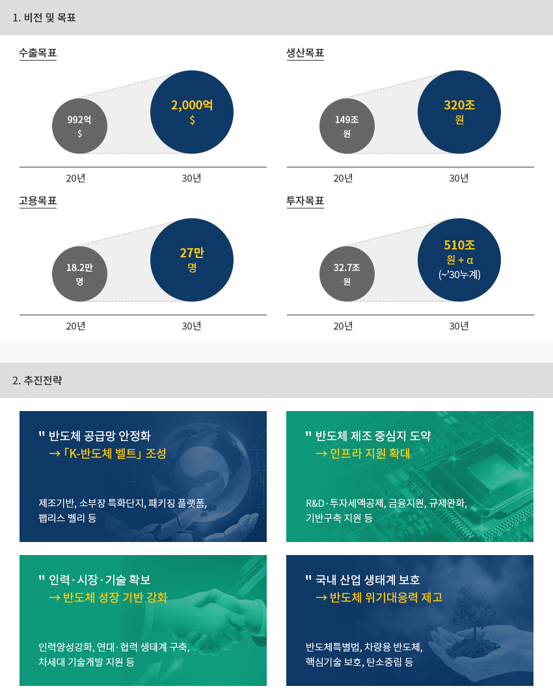

반도체
- Home
- Why KOREA
- 산업
- 반도체
반도체
Semiconductor
-
메모리 반도체 세계 1위, 종합 반도체 세계 2위 기록 내용닫기메모리 반도체 세계 1위, 종합 반도체 세계 2위 기록2020년 기준 한국의 글로벌 반도체 시장점유율은 18.4%로 2013년 이후 세계 2위를 지속하고 있다.
특별히 전세계 메모리 반도체 시장의 56.9%를 차지하였으며, DRAM 71.1%, NAND는 44.9%를 점유하였다.
한국 메모리반도체는 세계 최고 수준의 기술력을 보유하고 있으며, 경쟁우위를 지키기 위해 지속적인 연구개발과 투자에
주안점을 두고 있다. 또한 한국은 초미세공정 기술력을 바탕으로 파운드리 시장 점유율 확대도 함께 추진 중이다.글로벌 반도체 시장 점유율(2020) 전체 반도체- 한국 18.4%(871억 달러)
- 미국 50.8%(2,405억 달러)
- 일본 9.2%
- 유럽 9.2%
- 대만 6.9%
- 중국 4.8%
- 기타 0.8%
글로벌 메모리반도체 시장 점유율(2020) 메모리- 한국 56.9%(729억 달러)
- 미국 28.6%
- 일본 8.7%
- 대만 4.2%
- 유럽 0.8%
- 중국 0.7%
 ※ 자료 : OMDIA 2021
※ 자료 : OMDIA 2021 -
한국 최대 수출품목으로 국가 경제 주도 내용열기한국 최대 수출품목으로 국가 경제 주도2020년 국내 반도체 총수출은 992억 달러이며, 이 중 메모리반도체가 639억 달러로서 전체 반도체 수출액의 64.4%를 차지한다.
또한 반도체는 한국 최대 수출품목으로서 2020년 기준 전체 수출의 19.3% 비중을 차지하며 한국 경제와 산업을 선도한다."한국 반도체 수출 추이"(단위: 억 달러)한국 반도체 수출 추이 표로 연도별 메모리반도체, 시스템반도체, 광개별소자 정보제공 구분 2013 2014 2015 2016 2017 2018 2019 2020 메모리반도체 255 340 338 352 672 941 630 639 시스템반도체 250 225 231 205 254 265 257 303 광개별소자 66 61 60 65 54 61 52 50 합계 571 626 629 622 979 1,267 939 992
-
글로벌 소재∙부품∙장비 기업의 한국 반도체 시장 진출 확대 내용열기글로벌 소재∙부품∙장비 기업의 한국 반도체 시장 진출 확대한국의 주력산업인 반도체를 기반으로 한 소재, 부품, 장비 분야의 많은 글로벌 기업이 한국으로 진출하고 있다.
반도체 식각 및 증착 장비를 주력으로 하는 미국의 램리서치는 2011년 램리서치매뉴팩춰링코리아를 설립한 이후
지속적으로 국내 생산량이 증가하였으며, 그 결과 2019년 국내 생산장비 5,000호기를 출하하였다.또한, 금년말 용인시에 연구개발센터를 오픈하고, 핵심 기술/장비를 한국에서 개발하며,
국내 생태계 강화에 중요한 역할을 하게 될 전망이다.대만의 실리콘웨이퍼 제조업체 글로벌웨이퍼스는 한국에 MEMC코리아를 설립한 후
2019년 제2공장 증설을 완료하고, 12인치 실리콘웨이퍼를 생산하고 있다.첨단 EUV 노광장비를 독점 공급하는 ASML이 화성에 첨단 EUV 클러스터를 조성할 계획이며,
TOK, 듀폰, 머크 등 반도체 소재기업들이 국내 생산을 위한 투자를 확대하고 있다.
차량용 반도체를 개발하는 온세미코리아도 국내 투자확대를 통해 전기차 시장성장에 대응할 계획이다. -
종합 반도체 강국 실현을 위한 「K-반도체 전략」 발표 내용열기종합 반도체 강국 실현을 위한 「K-반도체 전략」 발표한국 정부는 “시스템반도체 발전 전략(2019.4)”, “인공지능 반도체 산업 발전전략(2020.10)” [K-반도체전략(2021.5) 등을 통해
메모리반도체를 넘어 시스템반도체를 육성하고 종합 반도체 강국을 실현하고자 하는 강한 의지를 갖고 있다.2030년까지 세계 최고의 반도체 공급망 구축을 목표로 투자세액공제율을 최대 5배 이상(6~10%)으로 상향하고,
1조원 이상의 ‘반도체 등 설비투자 특별자금’을 신설하여 파운드리, 소부장 및 패키징 시설투자를 지원할 예정이다.또한, 반도체 제조시설 관련 규제 합리화 및 용수, 전력 등 인프라 구축을 위한 정부 지원을 확대할 예정이다."비전 : 2030년 세계 최고의 반도체 공급망 구축"-
1. 비전 및 목표
- 수출목표 : 20년(992억 $) > 30년(2,000억 $)
- 생산목표 : 20년(149조 원) > 30년(320조 원)
- 고용목표 : 20년(18.2만 명) > 30년(27만 명)
- 투자목표 : 20년(32.7조 원) > 30년(510조 원 + α)(~’30누계)
-
2. 추진전략
- 반도체 공급망 안정화 → 「K-반도체 벨트」 조성 : 제조기반, 소부장 특화단지, 패키징 플랫폼, 팹리스 벨리 등
- 반도체 제조 중심지 도약 → 인프라 지원 확대 : R&D·투자세액공제, 금융지원, 규제완화, 기반구축 지원 등
- 인력·시장·기술 확보 → 반도체 성장 기반 강화 : 인력양성강화, 연대·협력 생태계 구축, 차세대 기술개발 지원 등
- 국내 산업 생태계 보호 → 반도체 위기대응력 제고 : 반도체특별법, 차량용 반도체, 핵심기술 보호, 탄소중립 등
-
1. 비전 및 목표
-
삼성전자, SK하이닉스를 중심으로 한 반도체 클러스터 내용열기삼성전자, SK하이닉스를 중심으로 한 반도체 클러스터국내 반도체 업체는 경기도권에 집중되어 있으며, 그 외 충북, 충남 등에 일부 분포되어 있다.
판교-기흥-화성-평택-온양 지역과 이천-청주 지역이 용인에서 연결되어 세계 최대의 반도체 공급망인 K반도체 벨트가 완성될 예정이다.삼성전자는 경기도 수원, 기흥, 화성에 이어 평택에 공장을 건설함으로써 평택에 세계 최대 반도체 생산 벨트를 구축할 예정이며,
SK하이닉스는 경기도 용인시에 448만 ㎡ 규모로 반도체 클러스터를 구축하여 2021년 착공 후 2024년부터 본격적으로
반도체를 양산할 예정이다. 용인 클러스터에는 소부장 특화단지를 조성하여 수요기업과 공급기업이 핵심 소부장 품목을
공동 개발하는 초대형 협력 모델을 추진할 예정이다.또한 판교지역을 한국형 팹리스밸리로 조성하고, 중부권에 파운드리 생산기반과 패키징 공정기반을 활용한
첨단 패키징 특화 혁신기지가 구축된다."K-반도체 벨트"- 경기도 판교: 팹리스
- 경기도 화성: 소부장, 메모리/파운드리
- 경기도 평택: 메모리/파운드리
- 충청남도 천안: 패키징
- 충청남도 온양: 패키징
- 경기도 기흥: 파운드리
- 경기도 이천: 메모리
- 경기도 용인: 소부장
- 충청북도 음성: 파운드리
- 충청북도 괴산: 패키징
- 충청북도 청주: 메모리/파운드리


Invest KOREA담당자
반도체/디스플레이 PM
박동율
기간산업유치팀
T.+82-2-3460-7726
입지정보 추천
산업단지 정보
[경기도 수원시] 수원델타플렉스(3블럭)[구:수원3]
세부정보 바로가기를 클릭하시면 산업단지공단의 Smart K-Factory 서비스의 해당 정보 화면으로 이동합니다.
-
단지명수원델타플렉스(3블럭)[구:수원3]
-
최초지정일2008.12.26
-
지정면적(km2)847,409
-
관리기관경기도 수원시
-
인근철도역수원역
-
역과 거리(km)4
-
인근공항김포국제공항
-
공항과의 거리(km)49
-
공업용수 공급용량(톤/일)3195(㎥/일)
-
가정용수 공급용량(톤/일)-
-
소속 기초 지자체경기도 수원시
-
인구수(명)1,190,074
산업단지 정보
[경기도 성남시] 판교제2테크노밸리[구:판교창조경제밸리]
세부정보 바로가기를 클릭하시면 산업단지공단의 Smart K-Factory 서비스의 해당 정보 화면으로 이동합니다.
-
단지명판교제2테크노밸리[구:판교창조경제밸리]
-
최초지정일2015.11.30
-
지정면적(km2)430,402
-
관리기관경기도 성남시
-
인근철도역옥수역
-
역과 거리(km)19
-
인근공항김포국제공항
-
공항과의 거리(km)45
-
공업용수 공급용량(톤/일)2025(㎥/일)
-
가정용수 공급용량(톤/일)-
-
소속 기초 지자체경기도 성남시
-
인구수(명)940,668
산업단지 정보
[경기도 화성시] 화성송산테크노파크일반산업단지
세부정보 바로가기를 클릭하시면 산업단지공단의 Smart K-Factory 서비스의 해당 정보 화면으로 이동합니다.
-
단지명화성송산테크노파크일반산업단지
-
최초지정일2016.12.26
-
지정면적(km2)528,723
-
관리기관화성도시공사
-
인근철도역수원역
-
역과 거리(km)34
-
인근공항김포국제공항
-
공항과의 거리(km)59
-
공업용수 공급용량(톤/일)2,034(㎥/일)[공업용수/생활용수 구분 없음]
-
가정용수 공급용량(톤/일)-
-
소속 기초 지자체경기도 화성시
-
인구수(명)842,864
산업단지 정보
[경기도 군포시] 군포첨단산업단지
세부정보 바로가기를 클릭하시면 산업단지공단의 Smart K-Factory 서비스의 해당 정보 화면으로 이동합니다.
-
단지명군포첨단산업단지
-
최초지정일2013.12.27
-
지정면적(km2)287,619
-
관리기관경기도 군포시
-
인근철도역수원역
-
역과 거리(km)10
-
인근공항김포국제공항
-
공항과의 거리(km)38
-
공업용수 공급용량(톤/일)1,376(㎥/일)
-
가정용수 공급용량(톤/일)-
-
소속 기초 지자체경기도 군포시
-
인구수(명)275,508
산업단지 정보
[충청북도 증평군] 증평2일반산업단지
세부정보 바로가기를 클릭하시면 산업단지공단의 Smart K-Factory 서비스의 해당 정보 화면으로 이동합니다.
-
단지명증평2일반산업단지
-
최초지정일2009.11.20
-
지정면적(km2)702,807
-
관리기관충청북도 증평군
-
인근철도역증평역
-
역과 거리(km)6
-
인근공항청주국제공항
-
공항과의 거리(km)17
-
공업용수 공급용량(톤/일)3,348(㎥/일)
-
가정용수 공급용량(톤/일)-
-
소속 기초 지자체충청북도 증평군
-
인구수(명)81,949
산업단지 정보
[경기도 평택시] LG Digital Park 일반산업단지
세부정보 바로가기를 클릭하시면 산업단지공단의 Smart K-Factory 서비스의 해당 정보 화면으로 이동합니다.
-
단지명LG Digital Park 일반산업단지
-
최초지정일2012.04.26
-
지정면적(km2)125,312
-
관리기관경기도 평택시
-
인근철도역오산역
-
역과 거리(km)22
-
인근공항김포국제공항
-
공항과의 거리(km)72
-
공업용수 공급용량(톤/일)-
-
가정용수 공급용량(톤/일)-
-
소속 기초 지자체경기도 평택시
-
인구수(명)527,166